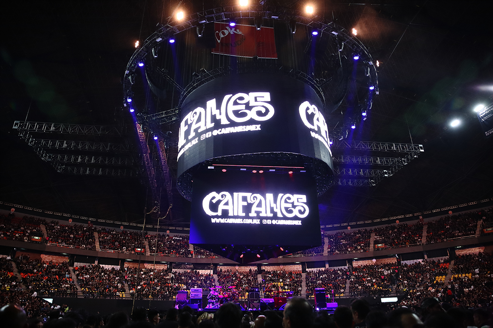
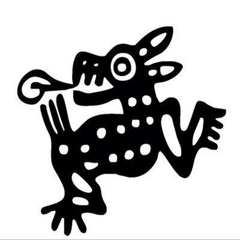

Viento
Habla de un amor profundo y del deseo de conectar completamente con otra persona. El viento representa esa unión, libertad y deseo de permanecer juntos.
Cultura Digital
Una de las bandas más importantes del rock mexicano
Cultura Digital
Caifanes es una banda mexicana de rock que comenzó su historia en la Ciudad de México durante la década de 1980. Su primer concierto fue el 11 de abril de 1987 en Rockotitlán. Con el paso de los años se convirtió en una agrupación muy reconocida dentro del rock mexicano




Antes de grabar su primer disco, Caifanes ya tenía prácticamente todas sus canciones preparadas. En su primer concierto, el 11 de abril de 1987 en Rockotitlán, el lugar se llenó y muchísima gente quedó afuera. Lo más loco es que todavía ni siquiera tenían un álbum grabado. La propia banda recuerda que temas como Mátenme porque me muero, Será por eso, Amanece y Cuéntame tu vida ya eran coreados por el público.

La música de Caifanes combina elementos de rock, post-punk, new wave y sonidos relacionados con la identidad musical mexicana. Sus canciones destacan por sus letras, guitarras y una atmósfera bastante característica.

Cultura Digital
Las canciones de Caifanes se caracterizan por tener letras poéticas, profundas y simbólicas. Hablan de temas como el amor, la muerte, el miedo, la identidad, la libertad y los conflictos sociales, combinándolos con el sonido característico del rock mexicano. La propia banda describe sus letras y su música como parte fundamental de la identidad que construyeron desde sus inicios
Habla de un amor profundo y del deseo de conectar completamente con otra persona. El viento representa esa unión, libertad y deseo de permanecer juntos.
Habla del choque entre culturas, la conquista y la defensa de la identidad mexicana. Contrasta a quien llega de fuera intentando imponer su visión con un pueblo que posee sus propias raíces, creencias e historia. El propio Alejandro Marcovich explicó que buscaba remarcar la diferencia entre invasores y conquistados.
Es una canción mucho más oscura y existencial. Habla de la angustia, desesperación y búsqueda de respuestas cuando una persona atraviesa un conflicto interno muy fuerte, preguntándose qué controla realmente sus decisiones.
Es un canto a la memoria, la resistencia y la dignidad, inspirado en la matanza estudiantil de Tlatelolco del 2 de octubre de 1968. Saúl Hernández contó que surgió del recuerdo de ver a su hermana regresar aterrada aquel día. La canción habla de dejar huella, resistirse a la injusticia y mantener viva la memoria de quienes ya no están.
Habla de amar intensamente mientras todavía se está vivo, aun sabiendo que la muerte llegará. También toca la injusticia y la mortalidad, pero coloca al amor como algo que vale la pena vivir antes de que todo termine.